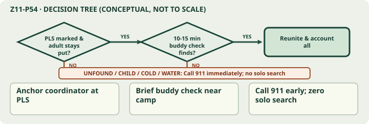

Z11-P54 · Navigation, weather and rescue · Adapted historical material
Coordinate an immediate containment and call-out check for a missing member
Execute a disciplined first-15-minute response when a companion vanishes without contaminating search clues or losing more people.
When it applies · Campgrounds, trails and backcountry sites immediately upon discovering someone is missing from head count.
Equipment · Watch, notepad, whistle, phone/communicator and buddy pairs.

Actions
- Freeze all non-essential camp movement, note exact clock time and mark the Point Last Seen (PLS) clearly without walking over nearby ground tracks.[N09, E11, T06]
- Assign one calm coordinator to stay put at the PLS (in case the missing person walks back) while buddy pairs check immediate obvious areas (tent, vehicle, bathroom, shoreline edge) within shouting/whistle range for no more than 10–15 minutes.[N09, E11, ED]
- Call 911 or park dispatch immediately if the brief bounded check fails—or IMMEDIATELY with zero delay if the missing person is a small child, medically vulnerable, near water/cliffs or in freezing weather.[T02, T06, N09, T10]
Failure recognition · Everybody bolting in different directions yelling randomly while nobody stays at camp and nobody calls 911 until nightfall.[N09, E11, T02]
Verify · Confirm one adult stays anchored at the PLS, clue area stays undisturbed and 911 dispatch receives accurate clothing, footwear, time and health details.[N09, T06, T02, ED]
Stop or change course · Never launch an uncoordinated dark or off-trail search party; once 911/SAR is notified, hold remaining group together and follow responder directions.[N09, E11, T02]
Evidence and editorial notes
- E11 · NPS · Hike Smart (current web edition)
- Section: Plan your hike; Stay together · Conditions: Groups on hiking routes
Support: Choose a route suited to the group's abilities and hike at a pace that keeps the group together.
Limitations: Fast hikers moving ahead at junctions is a leading driver of preventable separation. · Conflicting evidence: None; aligns with SAR prevention principles.
Editorial note: Core reference for group accountability and pacing cards. · Specialist reviewer: Group leaders and search and rescue
Primary source · checked 2026-11-24 - N09 · NPS · Outdoor Emergency Plan (current web edition)
- Section: If You Get Lost; Seek help · Conditions: Lost hiker who cannot safely retrace steps and has sought rescue
Support: Report last known location and landmarks. Stay put while awaiting help unless an immediate threat requires getting to safety.
Limitations: Navigation, signaling method and safe movement depend on site and responder instructions. · Conflicting evidence: See A02 claim audit for boundaries.
Editorial note: Core evidence for lost-person psychology, signaling and SAR coordination cards. · Specialist reviewer: Search and rescue
Primary source · checked 2026-11-24 - T02 · American Red Cross · First Aid Steps (current web edition)
- Section: First Aid Steps > Call 9-1-1 · Conditions: Lay emergency response to unresponsiveness, abnormal breathing or severe bleeding
Support: Activate EMS and get needed equipment. Follow dispatcher directions and act within training.
Limitations: Remote locations may delay EMS arrival, requiring sustained stabilization after activation. · Conflicting evidence: None; aligns with NPS-E.
Editorial note: Mandates early emergency activation and dispatcher adherence. · Specialist reviewer: EMS and wilderness medicine
Primary source · checked 2026-11-24 - T06 · NPS · Outdoor Emergency Plan (current web edition)
- Section: If you get lost or hurt; call for help · Conditions: Outdoor US emergency
Support: Communicate location, last known point, situation and needs. Stay put when unable to establish a safe route unless immediate danger requires movement.
Limitations: Cell signal is unreliable in backcountry terrain; pre-trip plans bridge communication gaps. · Conflicting evidence: None; core lost-person decision rule.
Editorial note: Foundation for stay/signal/move and dispatch handoff cards. · Specialist reviewer: Search and rescue
Primary source · checked 2026-11-24 - T10 · FEMA / Ready.gov · People with Disabilities (current web edition)
- Section: People with Disabilities > Make a Plan and Build a Kit · Conditions: Individuals with mobility, sensory, medical, or power-dependent access and functional needs
Support: Build a personal support network, plan accessible evacuation transport, register voluntarily with local emergency registries where available, and plan backup power and spare supplies for medical devices, medications, and service animals.
Limitations: Local registry availability and utility priority-restoration policies vary by jurisdiction. · Conflicting evidence: None; extends generic preparedness plans to accessible requirements.
Editorial note: Directly addresses Z01 accessible emergency planning requirement. · Specialist reviewer: Accessible emergency management and disability preparedness
Primary source · checked 2026-11-24
Source lineage · B014-P17 and NPS emergency plan; new manuscript · Classification · Adapted historical material.